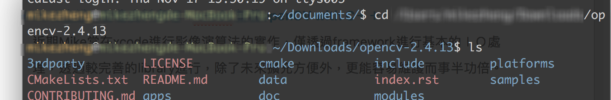
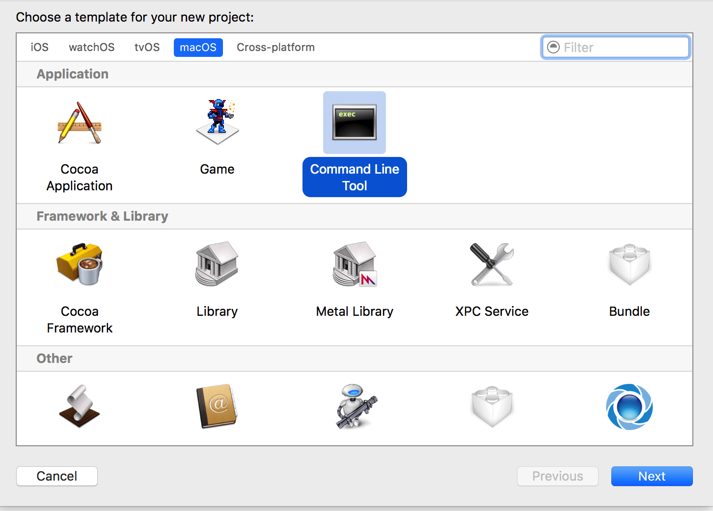
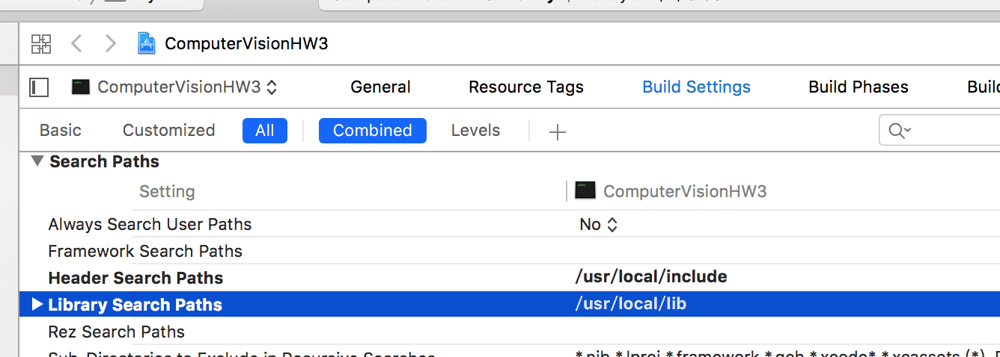
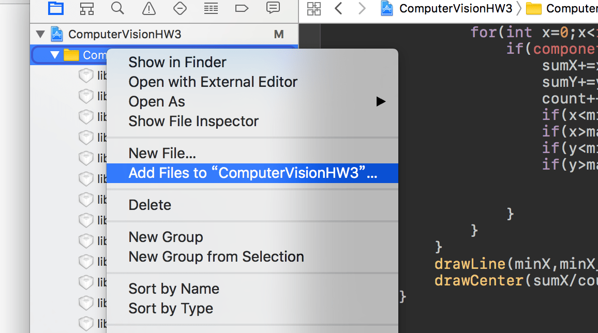
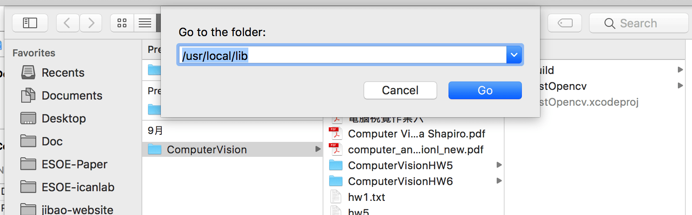
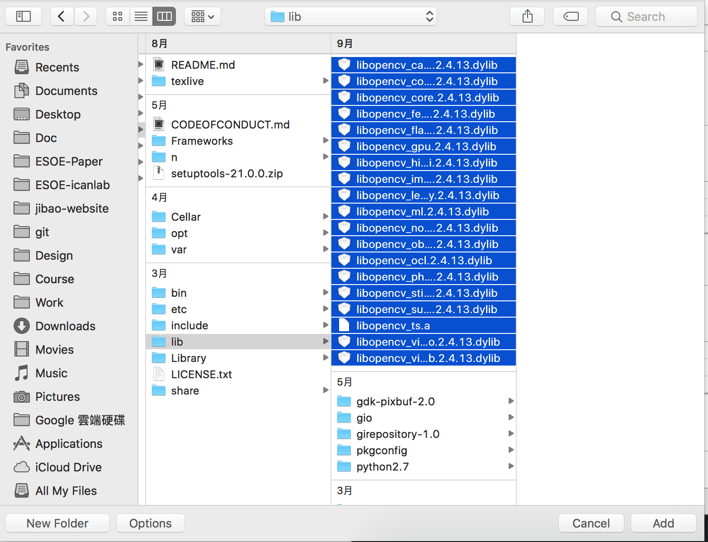
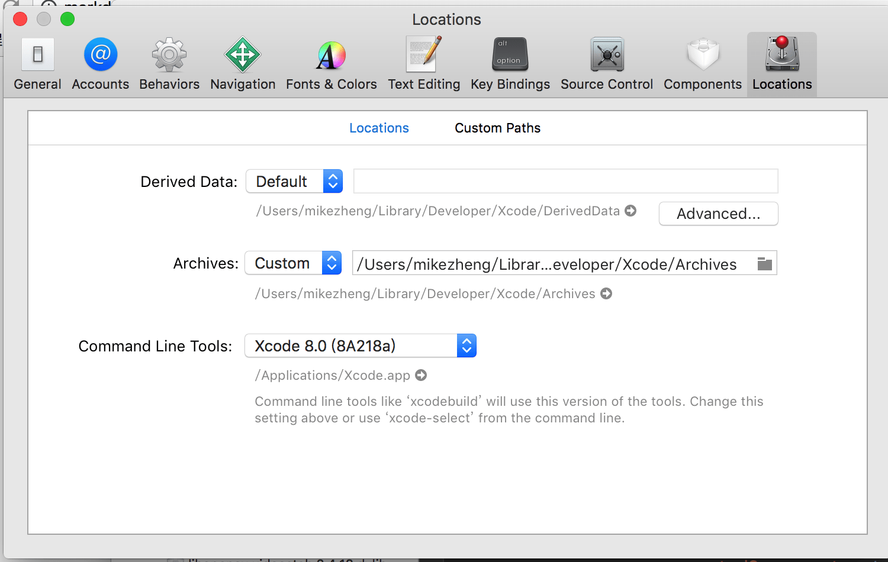
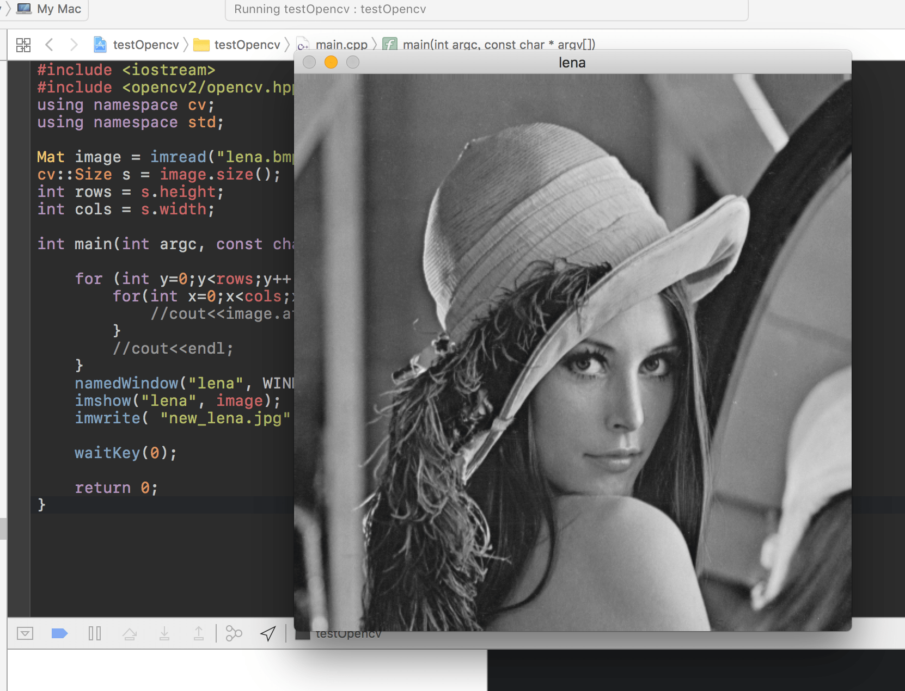

[學習筆記] MAC上進行影像資料處理 xcode 加載openCV with C++
MAC上進行影像資料處理，xcode 加載openCV with C++
近期常在xcode進行影像演算法的實作，僅透過framework進行基本的ＩＯ處理，透過較完善的library進行，除了未來擴充方便外，更能容易維護而事半功倍。
為什麼使用 openCV ？其實也源自於大學期間有開發過一些影像的專題，那時通常都會因為openCV在windows上路徑版本的不同導致開發環境相關設置出現不可預期的錯誤，那樣的經驗也造就認為windows系統在做開發，是自討苦吃的開始。
這次文章的主題就是在Mac系統下，進行影像相關處理時，透過openCV進行ＩＯ進而開發。
安裝
安裝部分將快速提及，筆記重點在於已安裝後的加載。
step1 下載
[ http://opencv.org/downloads.html ]
step2 解壓縮後進入該資料夾

step3 建立release資料夾，並透過cmake進行編譯openCV library
mkdir release
cd release
cmake -G "Unix Makefiles" ..
make
step4 make install安裝
make install
而相對應的文件就會在以下路徑下/usr/local/lib(Opencv library 文件)/usr/local/include(Opencv 標頭 文件）/usr/local/share/ (Opencv xml 配置)
xcode 加載 openCV
完成了基本的安裝，這邊開始才是本文的重點，尤其每次專案都要重新進行加載這部分，留下比較未來更能夠快速開始。
Step1
File -> New project -> MacOS ->Command line

將專案命名且完成存放路徑後於底下路徑進行參數添加
Search Paths -> Build Settings->All
按下+的按鈕後將下面所對應的路徑加入如下圖
Header Search paths 添加/usr/local/include
Library Search paths 添加/usr/local/lib

Step2
對專案左欄選單按下右鍵，
點選 Add files to ”專案名稱”，

此時按下鍵盤cmd+shift+G
將所對應的路徑/usr/local/lib 加入

並將openＣＶ相關的資源加入

Step3 加入圖片
這邊要做的是將專案資源檔調成相對路徑，以便於開發上資源的整理

preference ->locations
將Archives改成custom
編譯後將圖片放入Build/Products/Debug
（未編譯前該路徑將沒有Products 與 Debug資料夾）
Step4 執行
將以下程式碼嘗試編譯
這邊用的是lena.bmp 進行測試
連結在這
lena.bmp
{kind=link}
#include (x,y)[0]<<" ";
}
//cout<
}
namedWindow("lena", WINDOW_AUTOSIZE);
imshow("lena", image);
imwrite( "new_lena.jpg", image);
waitKey(0);
return 0;
}

最後就完成基本的環境設定。